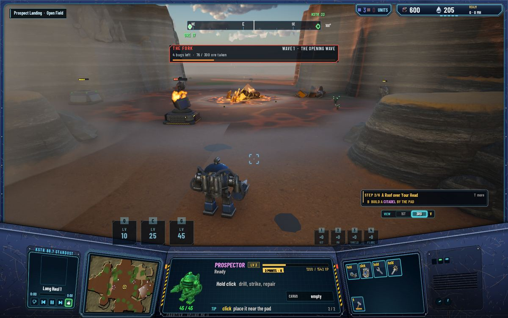
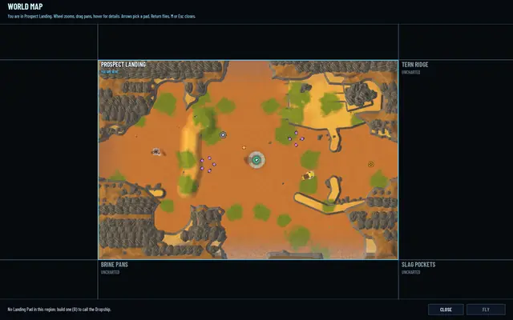
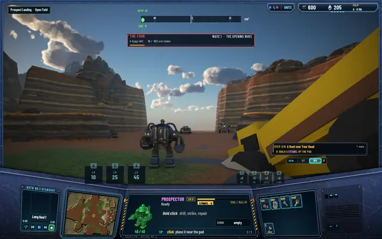
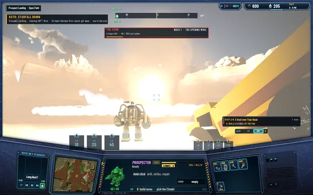
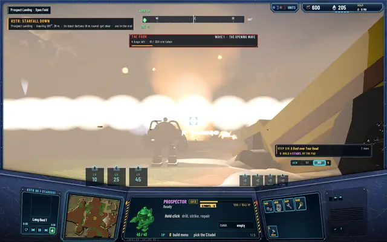

Scarcity: ore that runs dry, and a star worth the chase
After a session on the frontier the remark was short: the resources are too abundant, there's no reason to hunt a fallen star. The regions held 36 to 58 ore deposits each and five or six MH wells; Prospect Landing alone had 89,100 ore in the ground. Today each region holds one or two veins and one well, a pilot mines the start region dry in about an hour and a quarter, and the star that falls once a world day is both the prize and the thing to run from.

One or two veins, one well
A vein is a ring of three to five mounds round an open middle, each mound's long axis along its radius, so the gaps between them stay walkable. The first cut laid them as tight clusters, and a mound mined to nothing let a Prospector walk over it; when it grew back it boxed the unit in. Rings fixed that, and the server also sets a unit clear of a mound that grows back under it. The ore scales with the region's brood level: 7,200 in Prospect Landing, two veins of 800-ore mounds; 11,000 or 11,200 in the level-2 regions; 17,000 in the far ones. A canyon's prize is its well in a ring of five rich mounds, 1,700 each at The Fork and the Drowned Cut, 2,600 at the Roost, with a small vein outside the walls. The region tool refuses a third vein, a vein of fewer than three or more than five mounds, a second well and ore outside the level's range, and the nine satellite maps are baked again.
What runs dry grows back
A mined-out mound grows back a tenth of its ore every world day, 40 minutes, on the world's clock, so it fills while nobody is on line and a stopped server catches up when it starts. A vein refills in ten world days. At level 1 one pilot mines Prospect Landing dry in about 75 minutes, 50 at level 20, and after that the region gives 1,080 ore an hour across both veins. Frontier pilots and mercenaries mine the same veins, so a shared region runs dry sooner, and a mercenary at a dry field stands unpaid until it grows back. The move is to go: fly or walk to the next region, or hunt a star.
Existing worlds adopt the new veins on their next load. Saves now keep each deposit and well by its place; a deposit at a mound of the new layout keeps its ore, the file's new mounds come in full, and every building stays. A well a Derrick stands on is kept, so the Derrick still pumps, and a new mound that lands under a building is left empty. It was checked on a copy of a played save.
The fall
About one star a world day now, two or three before, with 100 to 1,000 ore in its crater and the drilling worth half again in XP. Its blast reaches a quarter of the region's longer side across: 18 cells round the impact in a medium region. Within 40% of that, 7 cells, everything is destroyed, buildings and units alike; from there the damage falls off to nothing at the edge, measured to each thing's nearest edge, so a Hab Dome a cell and a half inside the edge loses a seventh of its hp. Before today the crater kept clear of buildings and units. Now nothing is spared but the home: the start region's Citadel and 25 cells round it, and a fall never lands where its blast would reach them. KSTR still warns a minute ahead, and its toast says how far the blast flattens.
The fall looks like one. The streak's head is 11 cells across and grows as it comes, with a 36-cell halo and a long tail, seen from anywhere in the region. At the impact a fireball swells over the blast's ground, its light reaching across the region, and the screen flares white, hard up close and faintly from the far side; a shockwave ring races out to 1.6 blast radii, rocks are thrown out glowing, a dust ring spreads and a column of smoke 50 cells high stands over the crater, lit from below. The ground heaves under the camera within four blast radii, in the pilot's view and the top-down one. Two new sounds made with ElevenLabs: the blast itself, heard to 180 cells, and the ground shaking after it for nine seconds, felt to 120. It all settles in twelve seconds, and the blast's ground stays scorched under the crater.
The numbers
The balance bench ran again on the new start region. A level-1 pilot unloads 8,334 ore an hour while the veins last, 7,884 before, because the rings are a shorter walk, 13.8 cells against 15.2. That's within the pace model, which stands. The three suites: core 511, net 102, server 351. The pictures are from the E1 picture run: a fall 30 seconds after the pilot drives, the pilot walking to 30 cells of the impact, and seven seconds before it the server putting a Hab Dome at its heart, a Gatling Gun and a Sentinel inside the blast, a second Hab Dome near its edge and Prospectors from the heart to the edge. The streak's picture is mostly glare and is left out.

Prospect Landing on the world map: two veins and one well.
Seven seconds before: the buildings the server put in its way.
The impact, the screen flaring white. KSTR: its blast flattens 18 round, get clear.
The shockwave ring, the thrown rocks and the smoke column.- The crater: the deposit in the middle, the gun inside the blast burning, the dome at the edge standing.